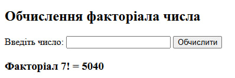
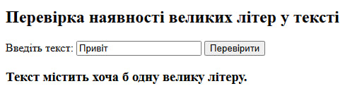

Тема: Робота з формами
Виконавець: Старенький Богдан Сергійович
Група: KN1-B22
Створіть форму для введення числа. Передайте його методом GET та обчисліть факторіал цього числа.
Переглянути розв’язок Створіть форму для введення тексту. Використовуйте метод POST. Перевірте, чи текст містить хоча б одну велику літеру.
Переглянути розв’язок 